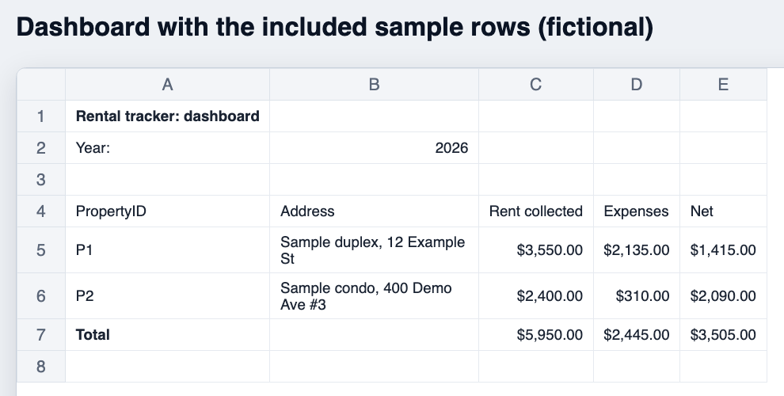

If you rent out a unit or two, you need three answers at any moment: who has paid this month, what did each property cost me, and what did it earn this year? Four small tables in Excel answer all three. Here's how to set them up, with the formulas.
1. Four tables
Make sheets named Properties, Units, Payments and Expenses, type the headers, and turn each into a table (Insert > Table) named the same as its sheet, so new rows pick up the formulas.
- Properties: PropertyID, Address
- Units: UnitID, PropertyID, Tenant, MonthlyRent, DueDay, LeaseStart, LeaseEnd, Deposit
- Payments: Date, UnitID, PropertyID, ForMonth, Amount, Method
- Expenses: Date, PropertyID, Category, Vendor, Amount
In Payments, ForMonth is the month the rent covers (type the 1st of that month), which keeps a late payment counted against the right month.
2. Fill in the property automatically
In Payments, column C (PropertyID) looks itself up from the unit: =IFERROR(INDEX(Units!$B:$B,MATCH(B2,Units!$A:$A,0)),"")
3. Who has paid this month
Put any date in the month you're checking in a cell, say B1. For a unit in A4 with its rent in C4, rent paid for that month is:
=SUMIFS(Payments!$E:$E,Payments!$B:$B,A4,Payments!$D:$D,">="&DATE(YEAR($B$1),MONTH($B$1),1),Payments!$D:$D,"<"&DATE(YEAR($B$1),MONTH($B$1)+1,1))
Balance is =C4-D4, and a status column can read =IF(E4<=0,"Paid",IF(D4>0,"Partial","Unpaid")).
4. Each property's year
With the year in B2 and a property ID in A5:
- Rent collected:
=SUMIFS(Payments!$E:$E,Payments!$C:$C,A5,Payments!$A:$A,">="&DATE($B$2,1,1),Payments!$A:$A,"<"&DATE($B$2+1,1,1)) - Expenses: the same with
Expenses!$E:$E,Expenses!$B:$BandExpenses!$A:$A - Net: rent minus expenses
5. Dropdowns
Excel won't use a table column as a dropdown source, so list your expense categories and payment methods on a small hidden sheet, name each range (Formulas > Define Name), and point Data > Data Validation > List at =YourRangeName.

Want it ready-made?
The finished workbook, with these formulas, a monthly rent check, a yearly dashboard per property, expense totals by category, dropdowns and a how-to sheet, is Rental Property Income & Expense Tracker for Excel, $15. Its columns match the layout above.
This is a spreadsheet how-to, not tax, legal or accounting advice. Ask a tax professional how to report rental income and expenses.